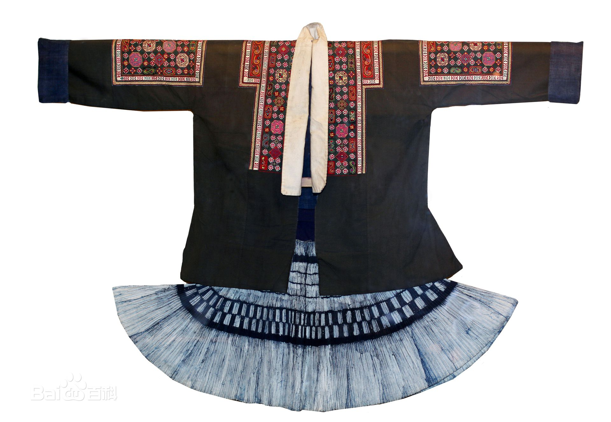
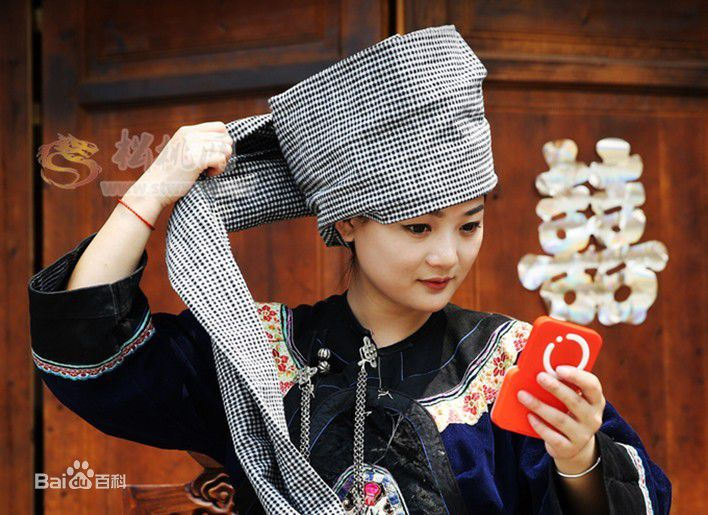

苗族服饰
苗族 ，(自称Xongb、Hmub、Hmongb等，英语称Miao或Hmong)，是一个发源于中国的国际性的民族，在2010年的人口普查中，主要分布在贵州、湖南、云南、重庆、湖北、四川、海南、广西等省（区）。苗族服饰样式繁多，据不完全统计多达200多种样式，年代跨度大。
苗族服饰，苗语叫“呕欠”，主要由童装、便装、盛装组成，“盛装”苗语叫“呕欠嘎给希”，即“升底衣服”，“ 呕欠涛”苗语称谓即“银衣”，下穿百褶裙，前后有围腰。苗族服饰是我国所有民族服饰中最为华丽的服饰，既是中华文化中的一朵奇葩，也是历史文化的瑰宝。湘西方言苗区和黔东方言苗区喜好银饰，黔南某些地区喜好贝饰，而西部方言区苗族服饰则少银饰。银饰、苗绣、蜡染是苗族服饰的主要特色。
- 
- 


 服饰
服饰